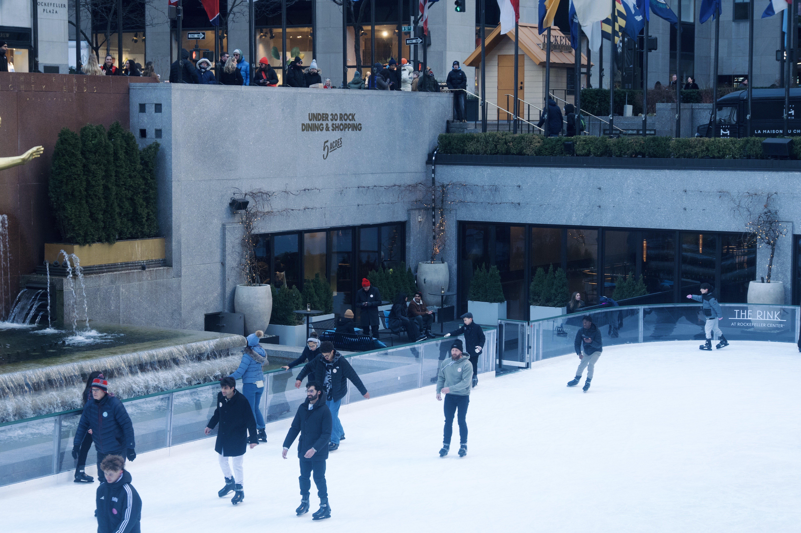

Entry — Where Blades Draw Light Across the Ice
The Rockefeller rink feels like winter condensed into a single circle of ice. Even before stepping close, the soundtrack reaches you: the crisp scrape of skates carving thin white lines, the light tap-tap of blades recovering balance, and the sudden hush when someone glides cleanly across the surface. Every sound is sharp, cold, and bright — like the air itself.
Around the rink, laughter ricochets off the metal railings. A child’s shout wavers, followed by the soft thud of mittens hitting the ice. A group of friends passes by in a blur, their skates making long uninterrupted arcs that sing a quiet shhhhhh under the holiday lights. Someone farther away loses rhythm, wheels their arms, and the audience lets out a collective inhale.
The overhead speakers play familiar winter songs, but the rink has its own rhythm — louder, more alive. Blades cross paths in overlapping patterns, creating a sound almost like paper being torn slowly and then smoothed out again. The cold amplifies everything: breaths, fabric brushing against jackets, the faint rattle of loose laces.
At the edge of the rink, workers drag wide shovels along the ice to collect shavings. The scrape is steady and metallic, a grounding counterpoint to the skaters’ loops. Tourists lean over the rail, cameras clicking; their voices blend into a warm murmur against the bright, brittle sounds below.